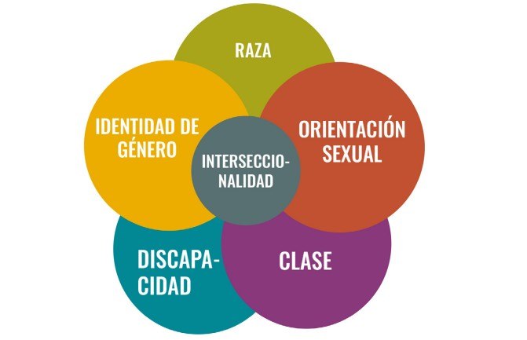

Diversidad Cultural y Migración
Historias de migrantes, costumbres y el impacto de la migración en la identidad cultural.
Descubrir →Selecciona un tema para explorar recursos, historias y acciones concretas.
Historias de migrantes, costumbres y el impacto de la migración en la identidad cultural.
Descubrir →Movimientos feministas, derechos LGBTQ+ y la importancia del lenguaje inclusivo.
Informarme →Políticas públicas, acceso a educación y salud para grupos vulnerables.
Explorar →Cómo se cruzan género, raza, clase y cultura en la experiencia humana.
Aprender →Herramientas para activismo digital y cómo involucrarse en proyectos comunitarios.
Actuar →La interseccionalidad es una forma de entender cómo las desigualdades se conectan y afectan la vida de las personas. El término fue introducido por Kimberlé Crenshaw (1989) para mostrar que una persona puede sufrir discriminación por diferentes razones al mismo tiempo: por su género, su raza, su nivel económico, su cultura o su orientación sexual.
En Guatemala y América Latina, esto se ve reflejado cuando una mujer indígena de bajos recursos tiene menos acceso a oportunidades que otras personas por el simple hecho de pertenecer a varios grupos discriminados. Comprender la interseccionalidad ayuda a crear sociedades más empáticas y justas.
La interseccionalidad se nota en muchos aspectos del día a día. No solo se trata de grandes movimientos sociales, sino también de situaciones comunes donde una persona puede ser juzgada o limitada por quién es.
| Grupo | Factores combinados | Problemas comunes | Acciones necesarias |
|---|---|---|---|
| Mujeres indígenas rurales | Género, etnia, pobreza | Poca educación, trabajo informal, exclusión política | Programas educativos, liderazgo comunitario y apoyo económico |
| Personas con discapacidad | Condición física, falta de accesibilidad | Dificultad para encontrar empleo o transporte público | Infraestructura inclusiva y sensibilización laboral |
| Jóvenes LGBTQ+ indígenas | Identidad, cultura, religión | Rechazo familiar, bullying y discriminación múltiple | Espacios seguros y campañas de respeto a la diversidad |
| Mujeres afrodescendientes | Raza, género, clase social | Bajos ingresos y falta de representación en medios | Programas de visibilidad y equidad salarial |
En diferentes regiones de Guatemala y América Latina, existen programas que aplican la interseccionalidad como parte de su trabajo. Estos proyectos buscan generar inclusión real y fortalecer el desarrollo desde las comunidades.

Existen muchas personas que representan el espíritu de la interseccionalidad. En Guatemala, mujeres indígenas defensoras del territorio, artistas afrodescendientes y líderes jóvenes están transformando sus comunidades con valentía y esperanza.
No se necesita ser parte de una organización para practicar la interseccionalidad. Todos podemos aplicarla en nuestras acciones diarias a través del respeto, la empatía y la inclusión.
La interseccionalidad no solo es una teoría, sino una forma de ver el mundo con empatía. Nos recuerda que cada persona vive una historia diferente y que la igualdad solo se logra cuando reconocemos esas diferencias. Entender la interseccionalidad nos permite construir una sociedad más humana, diversa y justa.
La participación ciudadana es el corazón de una democracia activa. En un mundo cada vez más interconectado, las formas de involucrarse han evolucionado: desde asambleas comunitarias hasta campañas digitales virales. Este artículo explora cómo las personas pueden ejercer su ciudadanía de forma efectiva, con herramientas modernas, ejemplos inspiradores y una mirada especial a Guatemala.
La participación ciudadana es el derecho y la responsabilidad de influir en las decisiones públicas. Va más allá del voto: incluye el diálogo, la fiscalización, la propuesta y la acción directa. Se manifiesta en formas como:
En Guatemala, este concepto cobra especial relevancia en contextos donde el acceso a servicios, justicia y oportunidades es desigual. La participación activa permite a los ciudadanos exigir transparencia, proponer soluciones y construir comunidad.
El activismo digital ha transformado la forma en que las personas se organizan, denuncian y promueven causas. Las herramientas más efectivas incluyen:
Estas herramientas permiten que incluso quienes viven en zonas rurales o con acceso limitado a recursos puedan participar activamente en la vida pública.

Estas campañas demuestran que el cambio es posible cuando la ciudadanía se organiza y actúa.
Profundiza en conceptos clave que transforman nuestra comprensión de la diversidad, equidad e inclusión a través de guías prácticas y recursos accionables.

5 estrategias concretas para promover la equidad en organizaciones y comunidades
Herramientas esenciales para crear espacios inclusivos que valoren la diversidad
Estrategias para construir culturas organizacionales verdaderamente inclusivas
Herramientas y materiales para profundizar en temas de diversidad, equidad e inclusión
Descarga materiales prácticos, plantillas y guías en PDF y Word
Accede a recursos externos, videos educativos y sitios recomendados
Material visual para comprender conceptos clave de manera sencilla
Definiciones clave sobre diversidad, equidad e inclusión
Si te gustaría hacer un aporte, sugerir un nuevo apartado o simplemente quieres charlar sobre el proyecto, ¡envíanos un WhatsApp!
Enviar mensaje por WhatsAppSomos un equipo de estudiantes de la Licenciatura en Tecnología de Sistemas Informáticos que identificó la necesidad de crear un espacio digital donde organizar y presentar información confiable sobre temas de diversidad, equidad e inclusión de manera clara y accesible.
Este sitio web nace como respuesta a la creciente necesidad de contar con información verificada, organizada y simplificada sobre multiculturalidad, equidad de género y justicia social. Nuestro objetivo es proporcionar un recurso educativo confiable para personas que buscan comprender estos temas complejos de manera clara y práctica.
Cada integrante del equipo se especializó en diferentes áreas temáticas, investigando, redactando y desarrollando contenido que combina rigor informativo con accesibilidad visual.
Licenciatura en Tecnología de Sistemas Informáticos
Iniciamos este proyecto con la visión de crear un espacio educativo accesible sobre diversidad e inclusión. Desarrollé la estructura inicial que evolucionó con las contribuciones del equipo, agregando nuevas secciones como "Explorar Temas Fundamentales". Mi aporte principal fue la investigación y redacción del tema "Acción y Participación Ciudadana" con enfoque en Guatemala.
Licenciatura en Tecnología de Sistemas Informáticos
Contribuyó en la investigación, redacción y codificación del apartado informativo, buscando que el contenido fuera claro, educativo y con impacto visual.
Licenciatura en Tecnología de Sistemas Informáticos
Aporto para la investigación, organización y clasificación de cada tema. Piensa que es una bonita experiencia saber de estos temas y estar al tanto de los cambios que se dan en cada Cultura.

Licenciatura en Tecnología de Sistemas Informáticos
Contribuí con ideas para mejorar la estructura del sitio y participé en la redacción del tema "Equidad Social y Justicia", ayudando a simplificar conceptos complejos para hacerlos más accesibles.
5 temas fundamentales desarrollados con investigación rigurosa y enfoque práctico
Interfaz intuitiva con modo claro/oscuro y diseño responsive para todos los dispositivos
Desarrollado con HTML5, CSS3 y JavaScript vanilla para garantizar compatibilidad y rendimiento
Estructura organizada que facilita la colaboración y futuras expansiones del contenido
Este es un proyecto en constante evolución. Si tienes sugerencias, quieres contribuir con contenido o reportar algún error, estamos abiertos a colaboraciones que enriquezcan este recurso educativo.
{kind=link}
{kind=link}
{kind=link}
{kind=link}